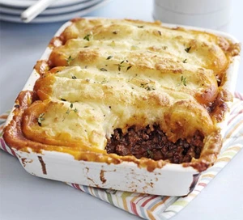

Cottage Pie

Decription
An all time family favorite, hearty meal.
Perfect as a Sunday roast alternative or as a mid-week meal.
Serves 6
Ingredients
- Onion 1.5
- Carrot 400g
- Mushrooms 400g
- Beef Mince 1KG
- Mushrooms
- Tomato puree
- Worcestershire sauce
- Garlic
- Pepper
- Salt
- Beef stock 1 cube
- Potatoes 2KG
- Butter
- Milk
- Peas 400g
Steps
- Fry Lite or oil a frying pan and fry the onions and carrots
- Add Mince
- Separate into two Pans if required
- Cook the mince until brown
- Drain the fat from the pan
- Consolidate into one saucepan
- Add puree, Worcestershire sauce, garlic, pepper and salt
- Mix 1 Beef cube with 250ml water
- Add the stock, bring the pan to the boil and simmer for 30 mins (Add more water if req)
- Peel Potatoes
- Switch Oven on to 200o
- Boil potatoes until soft, then mash with a dash of milk and butter
- Add peas to mash
- Pour the filling into a dish and top with the mash
- Sprinkle Cheese on top of the potato
- Cook for 25 mins
Return to home page